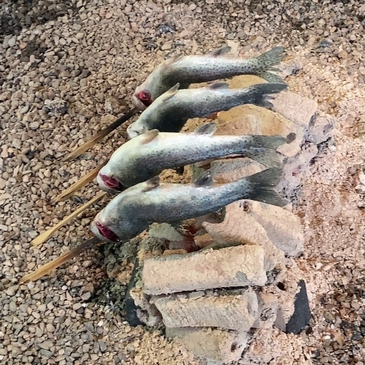

鈴木一平太のプロフィール

（画像についてひとこと：釣った鮎を焼いています）
所属など
ゼミでpythonの勉強をしています。まだ開発とかはしてないです！
都内でマッククルーやってます。
趣味や属性
スケボー、キャンプ（もどき）、サウナ、ラーメン巡りなどやりたいことは何でもやります！
最近はドライブにはまってます。
同じ趣味の人は絶対仲良くなれます
好きなマックのメニュートップ３
私の好きなマックのメニューのトップ３です！
- 炙り醤油風 ダブル肉厚ビーフ
おそらく一番カロリー高いのではないでしょうか。
- ビックマック
野菜食べたいってときはこれにします。
- スパチキ
たまにスパ吉っていっちゃって恥ずかしい思いをします。
食べ過ぎて飽きたメニュー
- テリヤキマックバーガー
- マックフライポテト
- アップルパイ
- ジュース
- というか大体飽きた
その他
使用PC
Windows
PC利用経験や、普段の使い方
大学の課題をやるときや、プログラミングの勉強の際利用します。
自分の強みや弱みなど
強み：ポジティブな方向へ気持ちを切り替えるのが得意です
へこんでも立ち直ります
弱み：切り替えることによって欠点の分析を怠ることがあります
TECH-BASE参加にあたり、意気込み
最後までやり抜きます！
このページのTOPへ ／ ググる